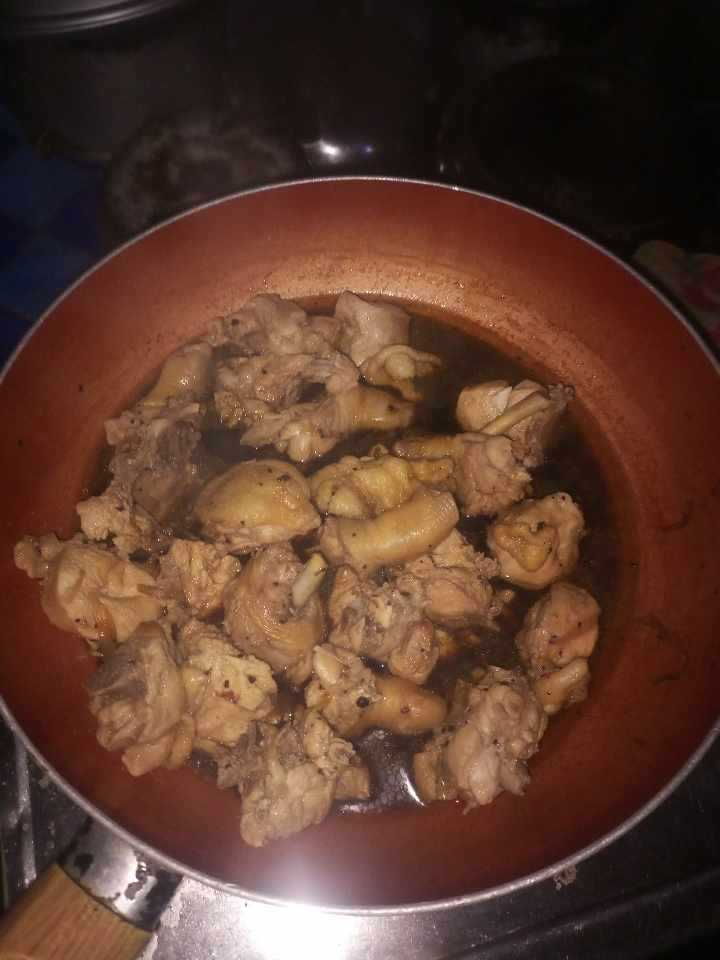

Cooking is one of my skills, and I enjoy preparing simple and tasty meals. Whether it's a quick dish or a homemade favorite, I like to experiment with flavors. If you ever want to share a meal or have any specific cravings.
I find myself adept at seamlessly adapting to various environments, a quality that has proven particularly valuable during my time here at the university. The diverse and dynamic nature of university life demands a quick and effective adjustment, and I have embraced this challenge with ease. Whether it's navigating the intricacies of academic coursework, establishing connections with my peers, or immersing myself in the vibrant campus community, my ability to adapt has been a guiding force. This adaptability not only enhances my overall university experience but also positions me to tackle new challenges and opportunities with confidence and resilience.